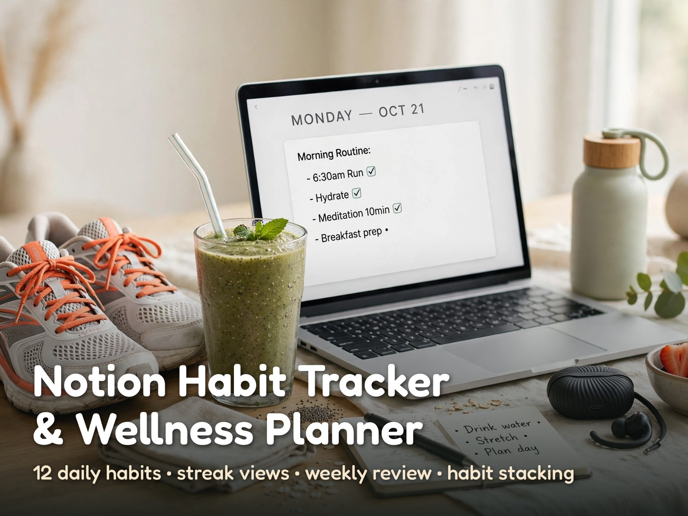

$9 USD — instant download
Notion Habit Tracker & Wellness Planner Template — 12 Daily Habits, Streak Views, Weekly Review & Habit Stacking
Get it on GumroadHabit trackers fail when they are just empty grids. This one comes with the method attached: how to mark each day, what target to set, and what to look for in your own data at the end of the week. It is the Notion edition of the Tmk Studio Habit Tracker Bundle — the same twelve habits and the same baseline method, rebuilt as a living database: check today's boxes in ten seconds, then let the calendar view and weekly rollups show you the month you are actually living.
The daily habit tracker database holds one row per day with checkbox properties for water, steps, sleep, mood (1–5), meals, exercise, reading, no-sugar, meditation, vitamins and gratitude, plus a notes field — marking a day takes seconds, on your phone or desktop. Streak and progress views add a calendar view of your month and per-habit rollups, so a broken streak is visible early, while it is still one missed day rather than a lost month. The weekly review page is short and guided: what the data says, which habit is quietly carrying the others — mood reads best against your sleep and exercise rows — and one focus to carry into next week.
The target-setting page teaches the baseline-week + 10% method for setting targets you will actually hit instead of targets copied from someone else's routine. The habit-stacking planner uses the anchor method to add one new habit per month without collapsing the rest: pick the habit, pick the existing routine it anchors to, and state your planned exceptions before the month starts. The monthly review and 90-day season view take the long look — three months on one page: what stuck, what quietly died, and what next season is for.
Buy on Gumroad and download the PDF instantly. The PDF contains your template link: open it, click Duplicate in the top-right corner, and the whole system copies into your own Notion workspace â yours to edit, forever. You only need a free Notion account; everything in this template works on Notion's free plan, on phone, tablet and desktop. A getting-started page inside gets you set up in minutes: choose your habits (start with five, not twelve), set your baseline week, and mark your first day. It suits anyone rebuilding a daily routine â sleep, movement, reading, calm â who wants the tracking to live where their notes already live. Honest note: this is an organization tool for everyday lifestyle habits, not medical advice, and tracking is not a treatment for anything.
This is a digital download — no physical item will be shipped. For personal use; please do not redistribute or resell the file.